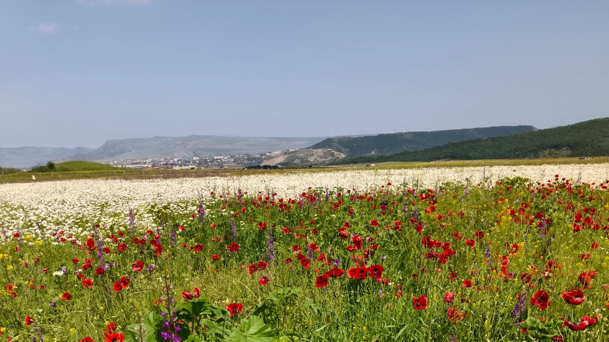

Владимир Сергиенко
Принимал участие в разведке , описании и составлении путеводителей маршрутов Кавказской тропы в Дагестане , Чечне , Ингушетиии, Северной Осетии, Краснодарском крае и Адыгее.
Автор пешеходный тропы Волга Море проходящей по территории Саратовской и Волгоградской областей.
Сертифицированный инструктор проводник.
Прошёл курсы первой помощи в дикой природе.
Пишу о Кавказе. Рассказываю истории в клубе путешественников Спорт - марафон. В свободное время, варю вкусный кофе и читаю Руми.
Моя история
Моя любовь к дикой природе началась в 2010 году с работы над
проектом "Сила Сибири".
Два года жизни в палатке, посреди
Якутский тайги, наблюдая как в течении года меняется
первозданный лес.
Потом были походы по степям Поволжья и
крымские тропы.
Но сердце всегда тянуло меня на Кавказ,
туда где звезды ближе, а люди тверже. Мир высоких гор, для
сильных духом .



Инструктор проводник
При организации я придерживаюсь двух основных принципа обеспечения безопасности.
И одного принципа организации похода.
Безопасность базируется на знании местности по которой я провожу походы.
И знакомства с местными жителями, готовыми оказать помощь в случае необходимости.
Горы нужно уважать, если меняется погода , мы меняем план действия. Мы всегда поступаем, наилучшим для нас образом.
Этому принципу, меня научил заслуженный альпинист и спасатель Андрей Николаевич Свитка. Мой преподаватель школе инструкторов проводников " Безопасность, Выживание, Спасение".
Все походы в обязательном порядке регистрируется в Мчс и реестре инструкторов-проводников при
Министерство
экономического развития
Российской Федерации.
Инструктор проводник
Поход со мной, это то путишествие мечты в которое я бы хотел отправиться сам имея такую возможность раз в год.
Идти с минимальным весом за спиной
Идти с человеком, который способен разделить мою радость от похода
Вкусно и разнообразно питаться, местной кухней.
Регулярно принимать душ.
Хорошо высыпаться.
Интересно должен сохраняться каждый день по нарастающей до последних метров похода.
Поход должен быть похожим на маленькую жизнь в воспоминаниях.
Годы проведённые на Кавказе и Волге и дружба с сотнями местных жителей во всех республиках, помогли мне создать путешествия мечты, в которое я приглашаю вас, мои друзья.
Диплом Инструктора проводника
Сертификат Первой помощи
Сертификат маркировщика троп
Авторские походы по Кавказу и Волге.
Походы с полным обеспечением.
Профессиональный подход, продуманная организация, собственный мобильный лагерь, маленькие группы, лучшее размещение, всё включено.
-
Телеграм
-
Вконтакте
Сертификаты и дипломы
-
Диплом инструктора
-
Освоение программы переподготовки
-
Диплом о первой помощи
-
Сертификат маркеровщика троп
- •Специализация на районах Кавказа и Поволжья
- •Всегда дружеская атмосфера в команде
- •Проводим вечера с комфортом
- •Современное лагерное оборудование
- •Клуб любителей дикой природы
- •Национальная и костровая кухня: готовит исключительно проводник